R Markdown
## 导入“aq.csv”数据表，命名为aq
aq <- read.csv("D:\\R project\\mydata\\aq.csv")
## 对表中Temp这列画图
plot(aq$Temp)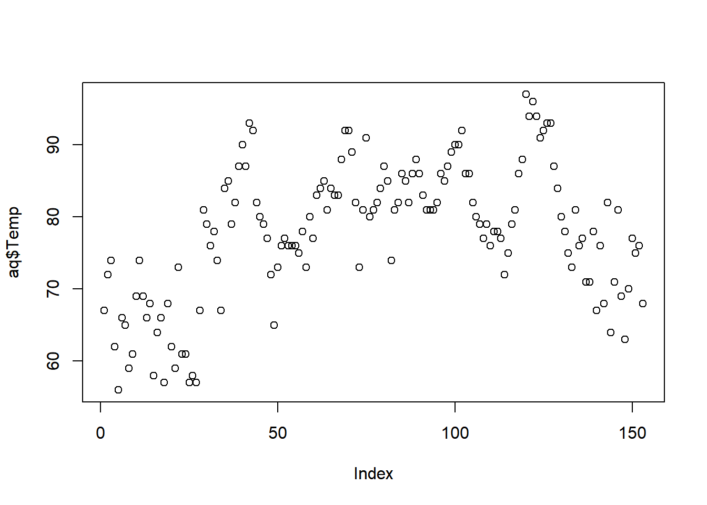
## 表中Temp和Ozone画图
plot(x = aq$Temp, y = aq$Ozone)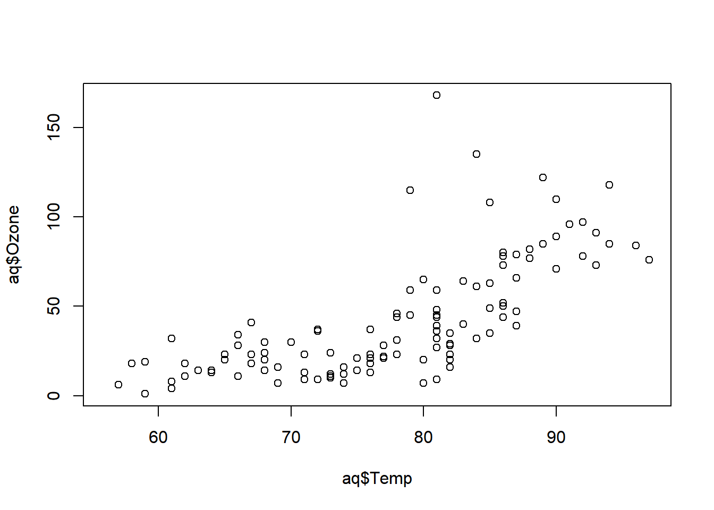
## 表中Temp和Ozone画图，符号标记为18，颜色为蓝
plot(x = aq$Temp, y = aq$Ozone, pch = 18, col = "blue")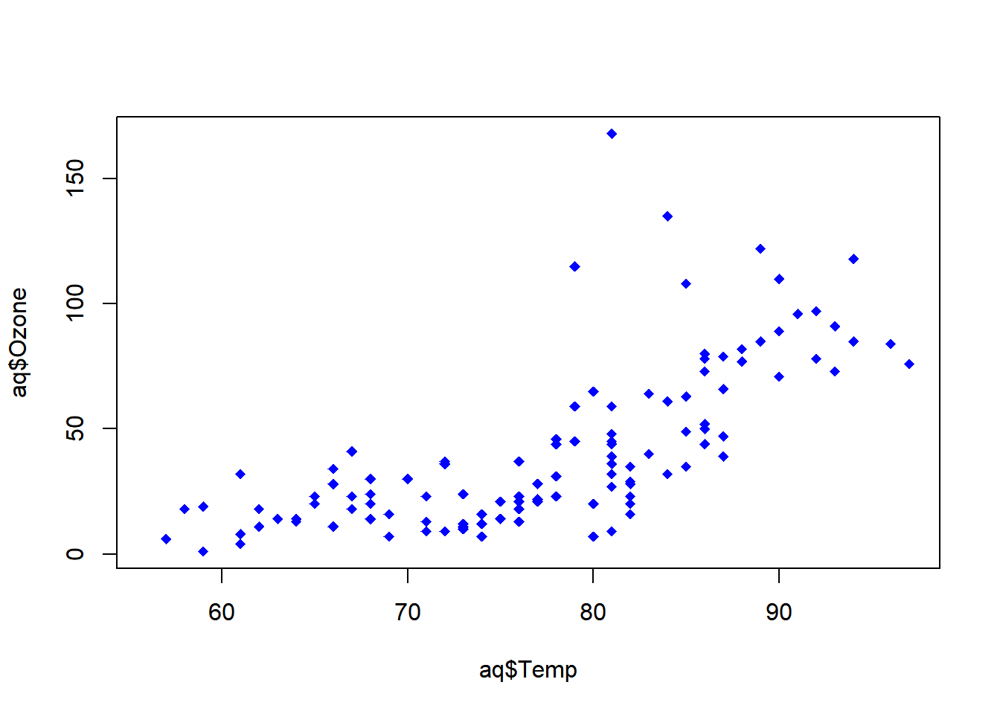
## 表中Temp和Ozone画图，符号标记为18，颜色为66色号
plot(x = aq$Temp, y = aq$Ozone, pch = 18, col = 66)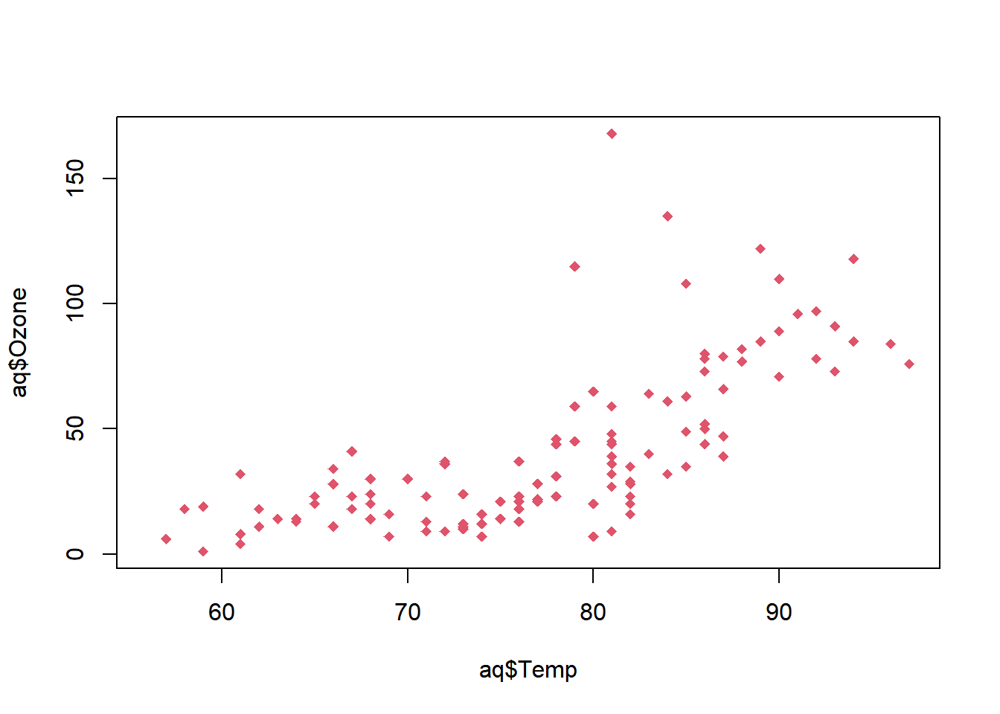
#判断语句
x <- c(-1, 1, -3)
## if-else 循环
if (x > 0) {
print("positive.")
} else {
print("zero or negative.")
}## Warning in if (x > 0) {: the condition has length > 1 and only the first element
## will be used## [1] "zero or negative."x <--2
if(x > 0){
print("large")
} else {
print("haha")
}## [1] "haha"x <- c(-1,1,-4)
x1 <- ifelse(x > 0, "positive", "zero or negative")
x1## [1] "zero or negative" "positive" "zero or negative"## Temp < 70时显示“小”，否则显示大。Ozone > 100时显示红色，否则为蓝色
plot(x = aq$Temp, y = aq$Ozone,
pch = ifelse(aq$Temp < 70, "小", "大"),
col = ifelse(aq$Ozone > 100, "red", "blue"),
cex = ifelse(aq$Solar.R > 200, 2, 1))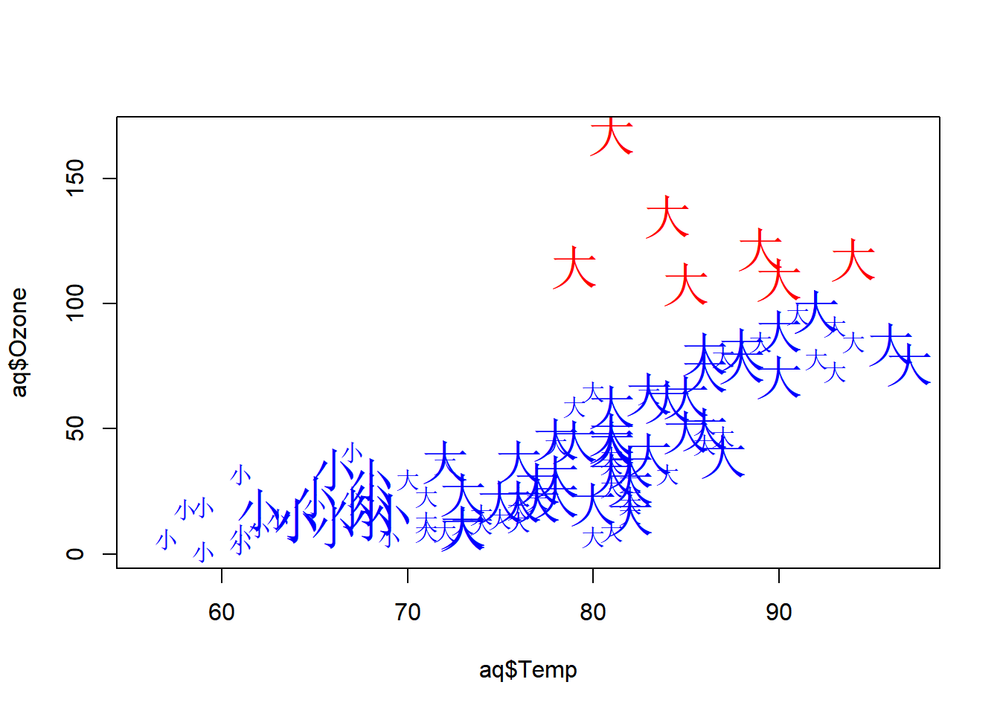
par(las = 1)
plot(x = aq$Temp, y = aq$Ozone, type = "h",
xlab = "Temperature", ylab = "Ozone")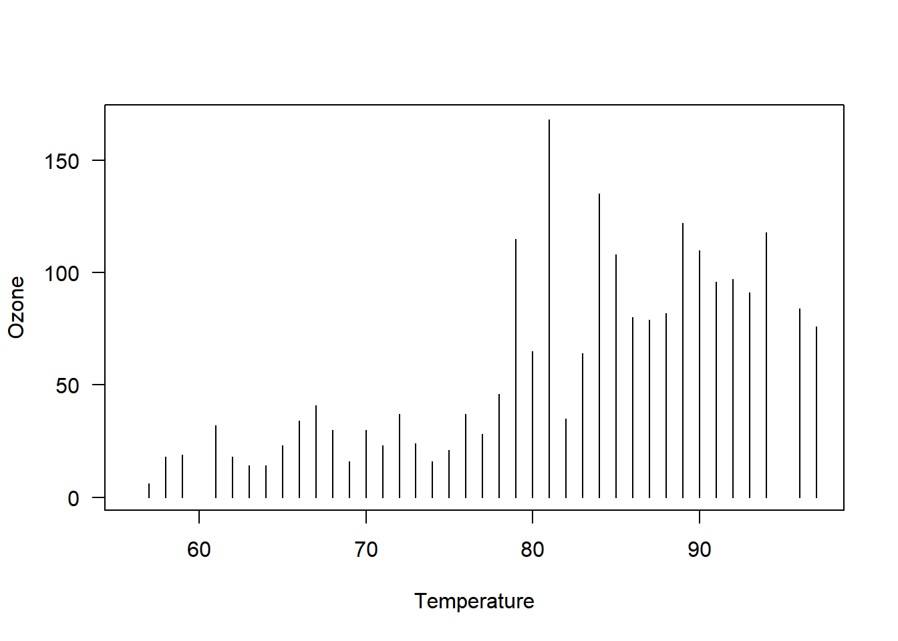
## las = 1 表示与纵坐标轴垂直
## type = “p” 表示绘制单独的点
## type = “l” 表示绘制点连成的折线
## type = “b” 表示有线连接的点
## type = “o” 表示将点绘在线上
## type = “h” 表示从点到x轴的垂线
## type = “s” 表示阶梯式图
## type = “n” 表示不绘制图
# 读取张舒的数据，命名为“zs”
zs <- read.csv("D:\\R project\\mydata\\zs1.csv")
## 以x和y1画图，type=l为点连接成的折线,lty=3为点虚线，xy轴分别命名为x、y。隐藏坐标轴，y轴为120~160.
plot(zs$x, zs$y1, type = "l", lty = 3,
xlab = "x", ylab = "y", axes = FALSE,
ylim = c(120, 160))
## x轴定义好大小为250, 500, 750, 1000, 1250, 1500，box()闭合
axis(1, at = c(0, 250, 500, 750, 1000,1250, 1500), labels = c(0, 250, 500, 750, 1000, 1250, 1500))
axis(2)
axis(3)
axis(4)
box()
## 添加曲线，x和y2的关系
lines(x = zs$x, y = zs$y2, col = "blue")
## 添加图例，
legend("topleft", lty = c(3, 1), col = c("black", "blue"), legend = c("y1", "y2"))
legend("bottomright", legend = "A")
## abline 画线，y=(a+bx),画一条y=x的线
abline(a = 0, b = 1)
## h：平行于横坐标轴，相对于y; v垂直于横坐标，相当于x.
abline(h = 140, col = "red")
abline(v = seq(0, 2000, by = 100), col = "red", lty = 2)
## 添加图表标题，
text(x = 750, y = 150, labels = "这是文字")
## 画多边形
polygon(x= c(200, 400, 600, 800), y = c(120, 150, 160, 140), col = "green")
## 多边形涂色， ## 数据表中第二第三列中的最大值下面部分涂为绿色，最小值下面部分涂为白色
y <- read.csv("D:\\R project\\mydata\\zs1.csv")
y_green <- c(0, apply(y[, 2:3], 1, max), 0)
y_pink <- c(0, y$y2, 0)
y_white <- c(0, apply(y[, 2:3], 1, min), 0)
x <- c(y$x[1], y$x, y$x[nrow(y)])
plot(y$x, y$y2, type="n", ylim = c(120, 160), xlab = "x", ylab = "y")
polygon(x = x, y = y_green, col = "lightgreen", border = NA)
polygon(x = x, y = y_pink, col = "pink", border = NA)
polygon(x = x, y = y_white, col = "white", border = NA)
lines(y$x, y$y2)
lines(y$x, y$y1, lty = 2, col="blue1")
box()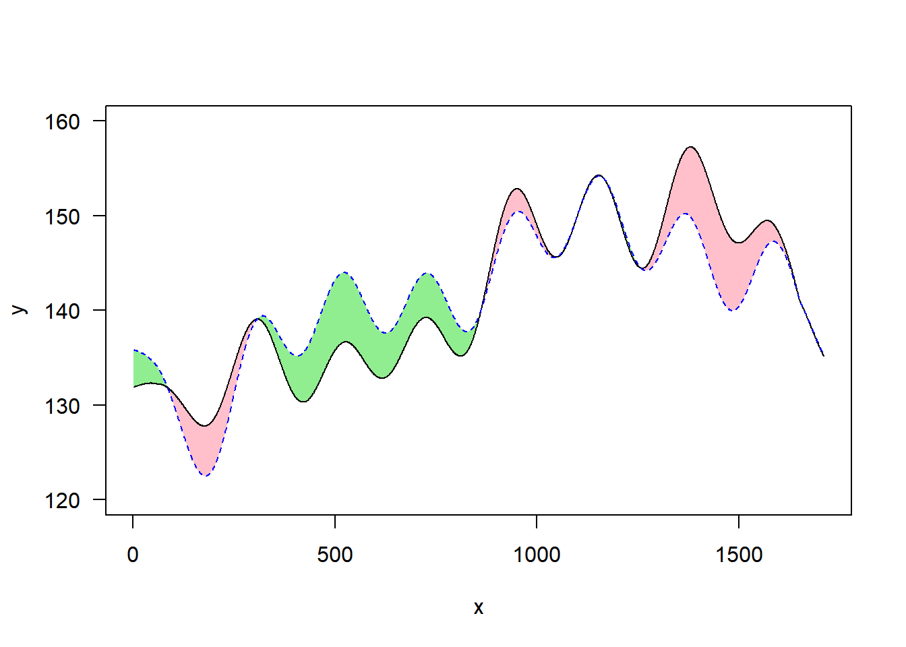
#箱图
boxplot(aq$Ozone ~ aq$Month, horizontal = TRUE, outline = FALSE)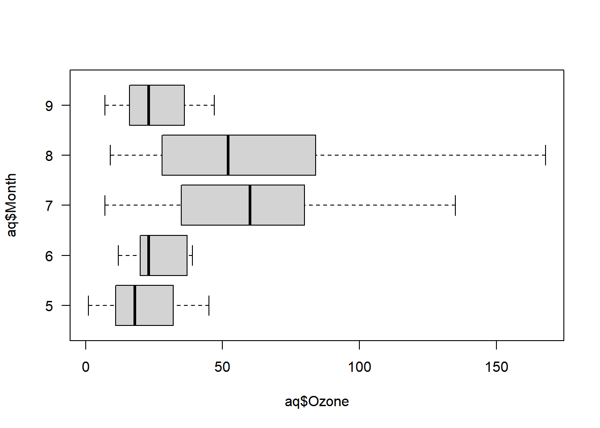
#aq$Month为分组依据
#horizontal = TRUE 表示 横向显示
#outline = FALSE 隐藏异常值
boxplot(aq$Ozone ~ aq$Month, horizontal = TRUE, col = 1:5, outline = FALSE)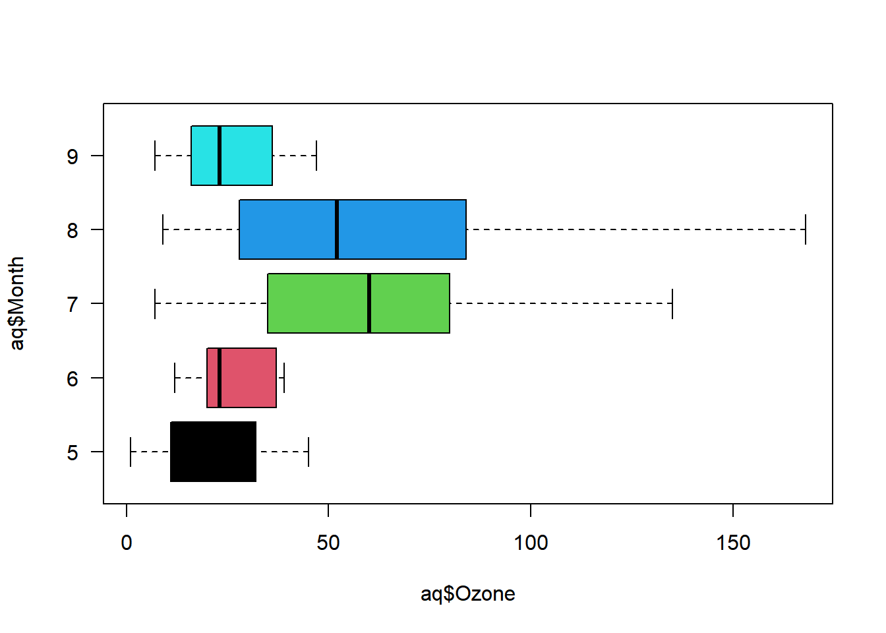
#直方图
hist(aq$Ozone,)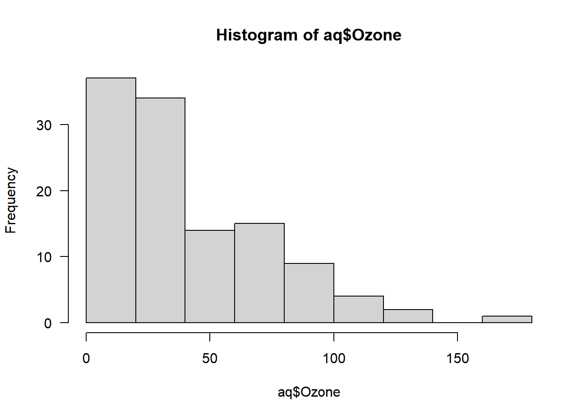
hist(aq$Ozone, freq = FALSE)
lines(density(na.omit(aq$Ozone)))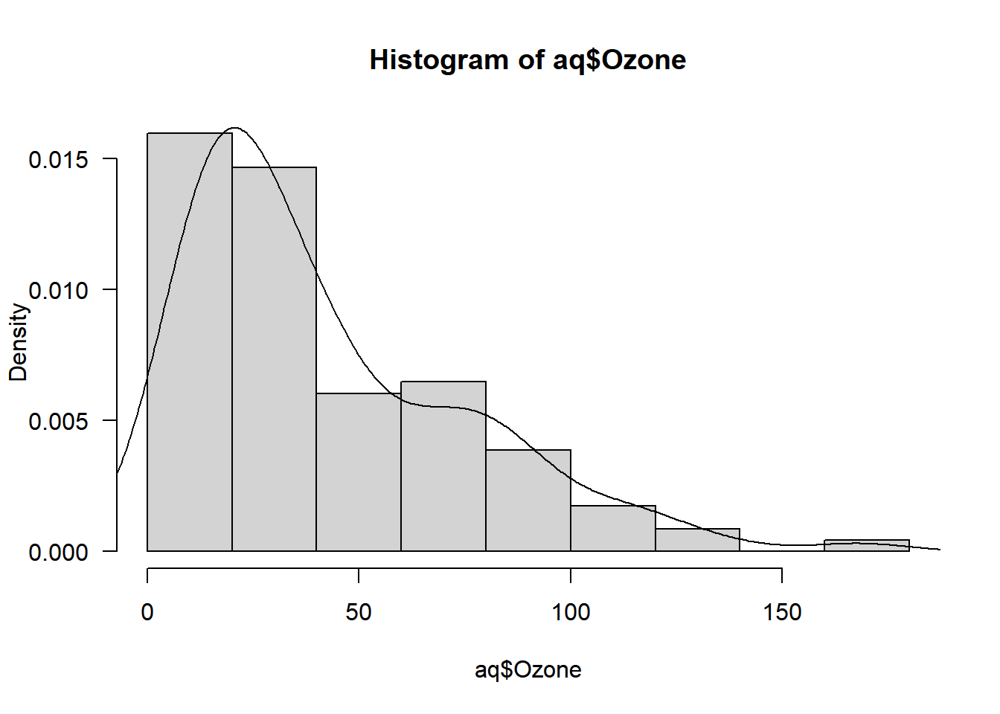
#两组数据共享一个X轴，两个y轴
plot(aq$Temp, aq$Ozone, pch = 16, col = "blue", ylim = c(0, 200))
par(new = TRUE)
points(aq$Temp, aq$Solar.R, pch = 1, col = "red", ylim = c(0, 400))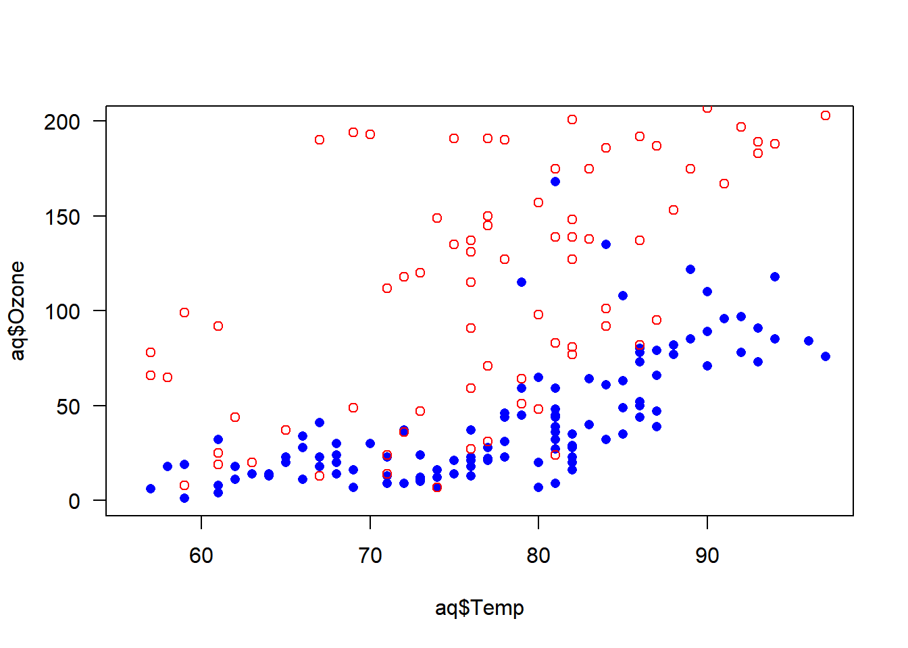
plot(aq$Temp, aq$Ozone, pch = 16, col = "blue", ylim = c(0, 200))
par(new = TRUE)
par(mfrow = c(2,4))
for(i in 2:5){
plot(aq$Temp, aq[,1])
}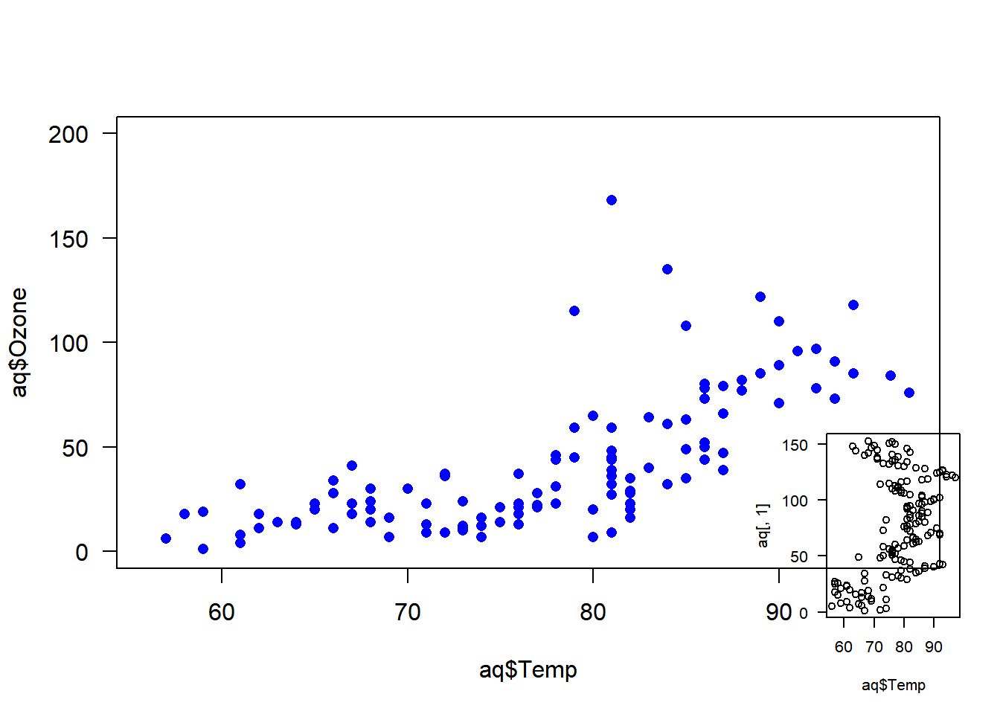
# 两组数据共享一个X轴，两个y轴
#mar函数为每个坐标轴离边缘的距离
par(mar = c(4, 4, 1, 4))
#绘图，隐藏坐标轴，主纵坐标为蓝色，次纵坐标为红色
plot(aq$Temp, aq$Ozone, pch = 16, col = "blue", ylim = c(0, 200),
xlab = "", ylab = "", axes = FALSE)
box()
axis(1)
axis(2, col = "blue")
mtext(text = "Ozone", side = 2, las = 0, line = 3)
#共用纵坐标
par(new = TRUE)
plot(aq$Temp, aq$Solar.R, pch = 1, col = "red", ylim = c(0, 200),
xlab = "", ylab = "", axes = FALSE)
axis(4, col = "red")
mtext(text = "Solar Radiation", side = 4, las = 0, line = 3)
#图表分别，3行两列
par(mfrow = c(3, 2))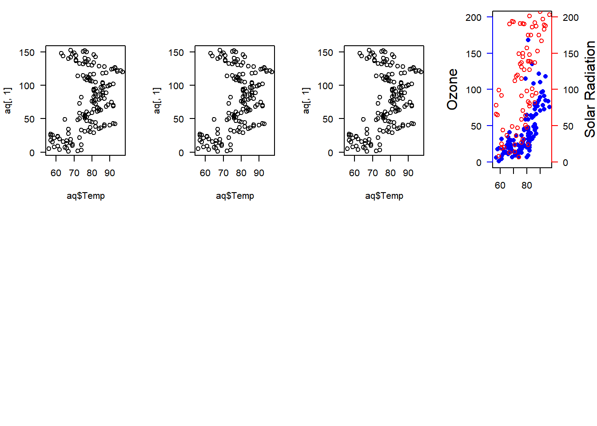
for (i in 2:5){
plot(aq$Temp, aq[, i])
}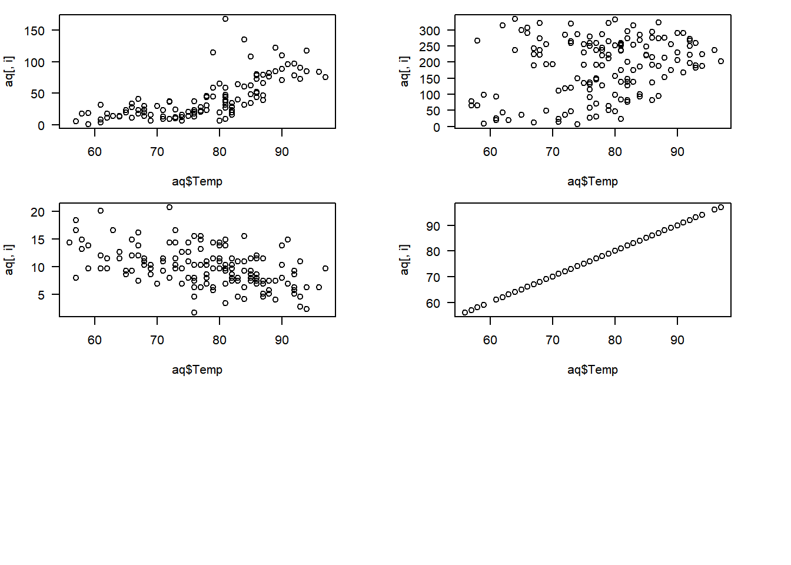